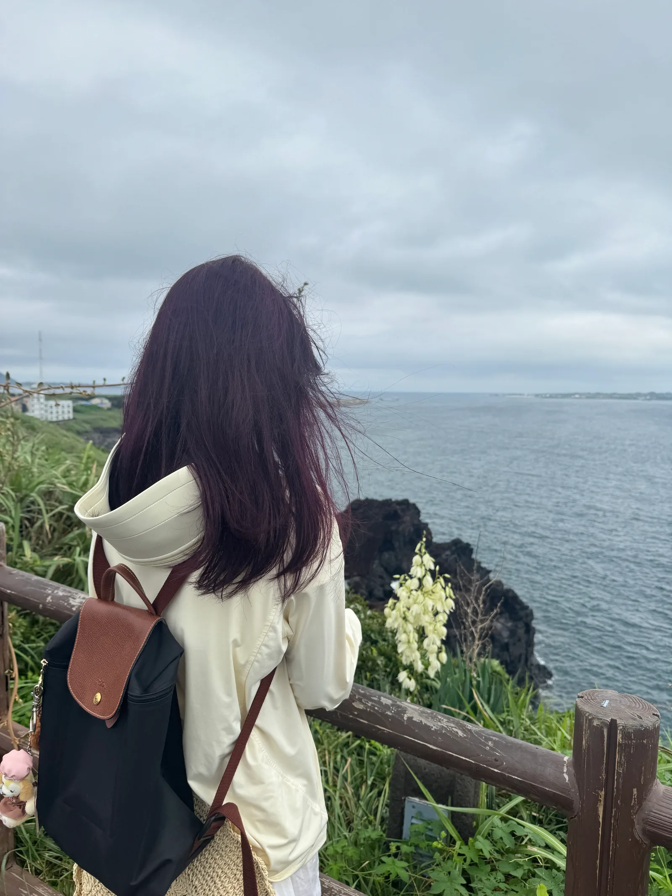
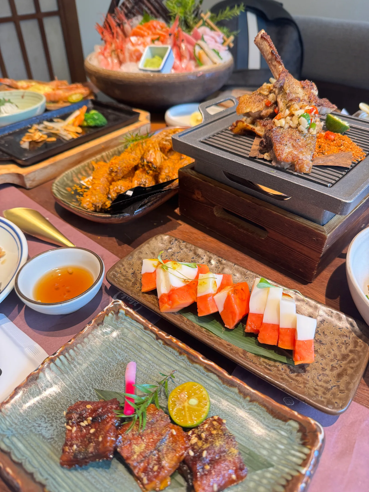

旅行与摄影
每次旅行，我都会拍一些照片留作纪念。城市街道、自然风景和途中遇到的小细节，都值得记下来。这张是在海边拍的。
课余时间，我喜欢旅行、拍照、尝试美食，也喜欢听歌和看演唱会。

每次旅行，我都会拍一些照片留作纪念。城市街道、自然风景和途中遇到的小细节，都值得记下来。这张是在海边拍的。

到了新的地方，我喜欢试试当地的餐厅和小吃。相册里除了风景，也存了不少食物照片。
平时会听歌，有机会也会去看演唱会。现场的声音和气氛，和戴着耳机听歌是两种体验。